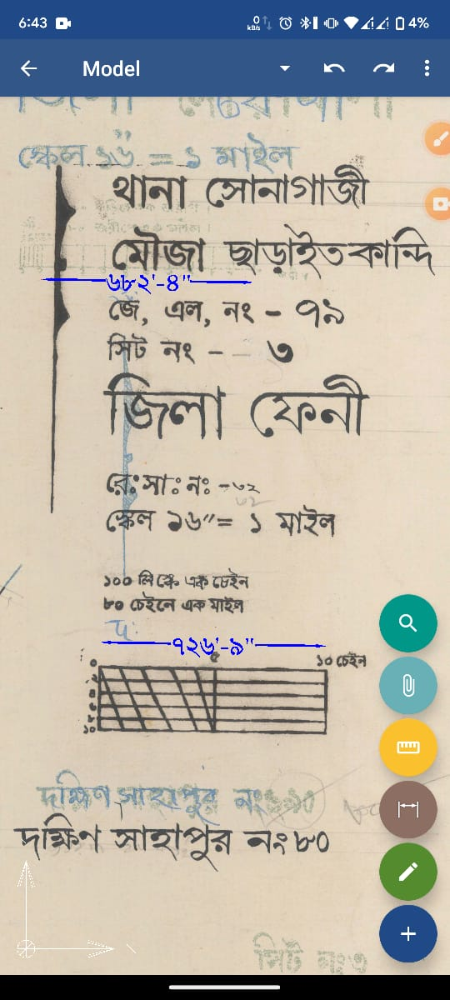
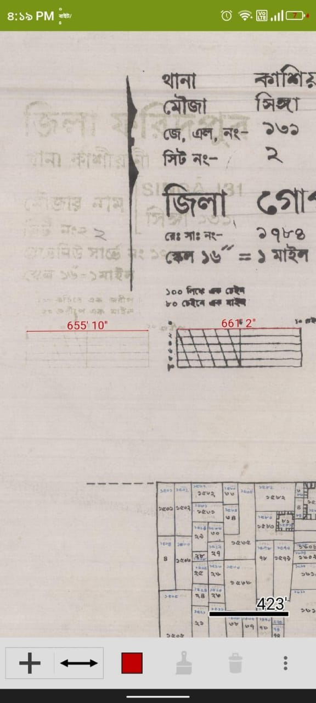

আমরা সবাই জানি মৌজা ম্যাপ এর রেফারেন্স স্কেল টা অধিকাংশ ক্ষেত্রেই ভুল থাকে।
এই স্কেল টা খুবই গুরুত্বপূর্ণ। যেকোনো ধরনের ম্যাপ এ রেফারেন্স দিতেই হবে ( আবশ্যক) ।
কিন্তু স্কেল টা যদি ভুল হয় এইটা কোনো কাজেই আসবে না। (তবে কিছুটা অনুমাইক ধারণা নেওয়া যেতে পারে, একটু দক্ষ হলে সেটারও প্রয়োজন হয়না)
তাই এই স্কেল টা বর্তমানে খুব একটা অর্থ বহন করে না।
কেও যদি আমার সাথে দ্বিমত থাকেন তাহলে আমার দেওয়া এই ম্যাপ গুলো পরিমাপ করার অনুরোধ রইলো!!
মৌজা ম্যাপ — Click Here
Scanning বা প্রিন্ট করতে অনেকে পরিকল্পিত বা ভুল করে উল্টা পাল্টা স্ক্যান করে ফেলতে পারে, অথবা যেকোনো কারণে পেজ সাইজ টা নষ্ট হয়ে গেলে কি করবো।
এমনকি সার্টিফাইড কপিতেও ত্রুটি থাকতে পারে ( খুব কম সংখ্যক ) । এইটা সরকার নিজেরও অস্বীকার করার কোনো সুযোগ নেই।
মৌজা ম্যাপ ও কিতাব না যে ভুল থাকবে না। বেশিরভাগ ক্ষেত্রে দেখা যায় প্রতি ৫০০০ ডিসটেন্স এ অবশ্যই মিনিমাম ১০-২০ ফিট গরমিল পাবেন।
এখন তো মহা ঝামেলায় পড়লাম। তাহলে কাকে বিশ্বাস করবো?🤔🤔
- মৌজা ম্যাপ এর রেফারেন্স স্কেল
- মৌজা ম্যাপ এর পেজ সাইজ। ( মানে ৩৯৬০ স্কেলিং করলে যেরকম হয় বা আমাদের হাতে হার্ড কপি যেরকম থাকে।)
- Google Map
আসেন শুরু করি তাহলে :-
-
মৌজা ম্যাপ এর ২" স্কেল টা যে ভুল তার প্রমাণ :-


-
স্কেল যদি সাভাবিক ভাবে নষ্ট হয় তাহলে ঠিক করার উপায়
মৌজা ম্যাপ গুলো A1 paper size এ স্ক্যান করা হয়েছে ( ২-১ জন মনে করে A0 , কিন্তু এটা ভুল ) ।
ঠিক করার প্রসেস টা শুধু মাত্র pdf এর ক্ষেত্রে প্রযোজ্য।
Photoshop এ ম্যাপ টি ওপেন করবো। ইমেজ সাইজ চেক করবো, যদি ভুল থাকে A1 paper size করে নিবো। এতেও ঠিক না হলে আমরা Adobe Illustrator দিয়ে ম্যাপ টা ওপেন করবো। ম্যাপ টি ভেক্টর আকারে ওপেন হবে। ভিতরের স্ক্যান করা ম্যাপ টির পেপার সাইজ এর কন্ডিশান টা একটু এনালাইজ করার চেষ্টা করবো। ভেক্টর পিডিএফ এর ভিতর raster image এর পেপার সাইজ টা check করবো। যদি ঠিক না মনে হয় তাহলে চেঞ্জ করবো। এভাবেই একটা ম্যাপ এর স্কেল ঠিক করার প্রসেস টা হয়ে থাকে।
এখন আসেন কিভাবে চেক করবো ম্যাপ এর স্কেল ঠিক আছে কিনা। -
গুগল আর্থ এর মাধ্যমে মৌজা মাপ এর স্কেল যাচায়
আগে ম্যাপটিকে ২-৪ মিনিট সময় নিয়ে গুগল earth এ ওভারল্যাপ করবো।
এবং দেখবো কতোটুকু মিলছে। এরপর ৩-৫ হাজার ফিট বা ১ কিলোমিটার এর বেশি জায়গার ডিসটেন্স মাপবো কয়েকটা। এরপর অটোক্যাড এ চেক করে দেখবো কতো ফিট এর ডিফারেন্স যদি ১০-১৫ ফিট এর মত হয় তাহলে ম্যাপটাকে সঠিক ধরে নিবো।
যদি বেশি আম্মাউণ্ট এর ডিফারেন্স হয় তাহলে ম্যাপ টা ভুল আছে এবং ২ নম্বর সমাধানে সংশোধনের চেষ্টা করবো । না হলে আমরা গুগল আর্থ থেকে রেফারেন্স নিয়ে স্কেল ঠিক করবো অথবা এর থেকে ভালো ম্যাপ সংগ্রহ করবো। Overlap করা হয়েছে এমন কয়েকটি ফাইল :— Click Here
এখন প্রশ্ন হলো আমি কি আমরা গুগল আর্থ কে বিশ্বাস করতে পারি?
হ্যাঁ অবশ্যই : — এ বিষয়ে সন্দেহ থাকলে ভিডিও দুটি দেখতে পারেন। Real life experience:-https://youtu.be/982aVPvCv7I?si=LhM_rDQr8Mg77cf_ https://youtu.be/rkgM6HQjd1k?si=G6Di48T2_4guaCWU